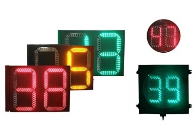

Sinowatcher Technology Co.,LTD
Triggered Countdown Timer --- Shocked Innovation
|  | Sinowatcher always keeps a close eye on market movement and continually issuing new design and customized products / solutions, which is the source of company vitality and improvements. This month, we would like to introduce our Triggered Countdown Timer to you. |
Learning Type > Works with fix time controller. Communicative Type > Works with intelligent communicative controller. |
Triggered Countdown Timer > Works with adaptive controller |

Dear customers, are you using adaptive controller now? Are you going to popularize this new product to your market?
For detailed specification and demonstration of such timer, click the above timer picture and check the video
Sinowatcher Technology Co.,ltd
is the leading designer ，solution provider and manufacturer for Intelligent Transportation Systems Products in China .Our products cover： LED traffic Lights，LED countown timers，traffic control systems，Road CCTV systems，Radar speed systems，Toll station management systems .